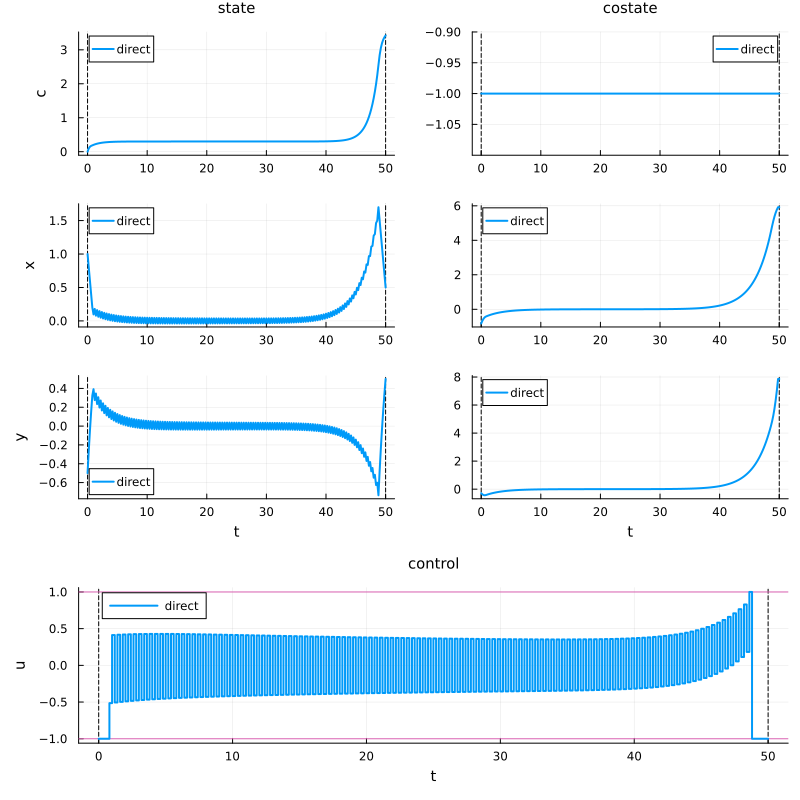
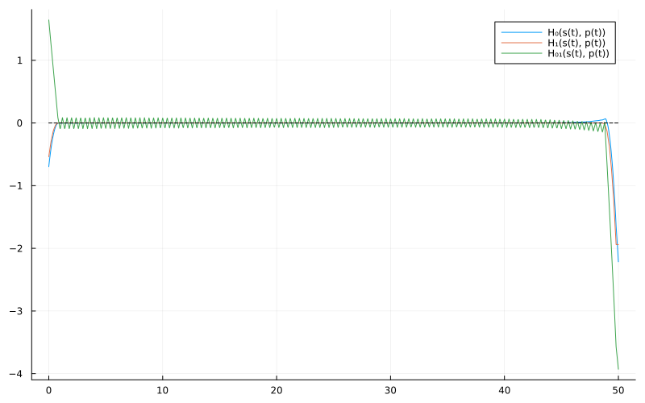
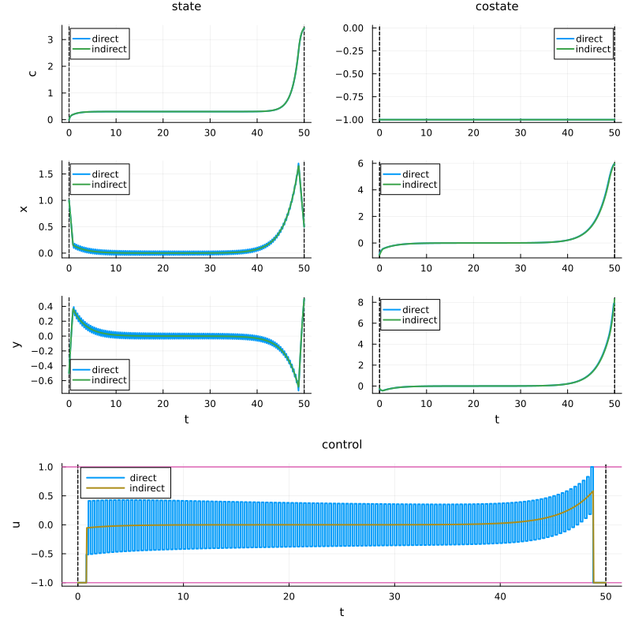

Problem definition
Recall that the optimal control problem we are considering is:
\[ \left\{ \begin{array}{ll} \displaystyle \min_{x,u} J(x,y,u) \coloneqq \frac{1}{2}\int_{0}^{T} \big(x^2(t) + y^2(t)\big) ~\mathrm dt \\[1em] \text{s.c.}~\dot x(t) = u(t), & t\in [t_0, t_f]~\mathrm{a.e.}, \\[0.5em] \displaystyle \phantom{\mathrm{s.c.}~}\dot y(t) = u(t) - \frac{y(t)}{2}, & t\in [t_0, t_f]~\mathrm{a.e.}, \\[0.5em] \phantom{\mathrm{s.c.}~} -M \leq u(t) \leq M, & t\in [t_0, t_f], \\[0.5em] \phantom{\mathrm{s.c.}~} \big(x(0), y(0)\big) = (1, -0.5), \quad \big(x(T), y(T)\big) = (0.5, 0.5), \end{array} \right.\]
with $M>0$ and $T>0$.
This optimal control problem is associated to the stationnary optimization problem
\[ \min{(x,y,u)} \big \{ x^2 + y^2 \mid (x,y,u) \in \mathbb R \times \mathbb R \times [-M, M], u = u - \frac{y}{2} = 0 \big\}.\]
The static solution is thus given by $(x^\star, y^\star, u^\star) = (0, 0, 0)$. This solution corresponds to the static equilibrium $(x,y,u)$ which minimizes the cost J(x,y,u) under the control constraint $|u|\leq M$. Our goal is to numerically show that this problem has the turnpikeproperty, i.e. if the final time $T$ is large enough, the optimal trajectory has the following form : starting from the initial state $(x(0), y(0)) = (1, -0.5),$, the trajectory try to reach as fast as possible the static equilibrium $(x^\star, y^\star, u^\star) = (0, 0, 0)$ and to stay close to it until it has to leave it to reach the final state $(x(T), y(T)) = (1/2, 1/2)$.
using Plots # For plotting and visualization
using OptimalControl # Main package for optimal control problems
using NLPModelsIpopt # Interface for Ipopt nonlinear solver
using OrdinaryDiffEq # For solving differential equations
using MINPACK # For nonlinear equation solving (shooting method)
using DifferentiationInterface # For automatic differentiation
using ForwardDiff # Forward mode automatic differentiation
using Ipopt, Optimization, OptimizationMOI # Additional optimization toolsT = 50.
M = 1.
s0 = [0., 1, -0.5]
xT = 0.5; yT = 0.5
F0(s) = [
0.5*(s[2]^2 + s[3]^2);
0;
-s[3]/2
]
F1(s) = [
0;
1;
-1
]
# Define the optimal control problem using OptimalControl.jl DSL
ocp = @def begin
t ∈ [0, T], time # Time
s = (c, x, y) ∈ R³, state # State
u ∈ R, control # Control
-M ≤ u(t) ≤ M # Control's constraint
s(0) == s0 # Initial state
x(T) == xT # Final state
y(T) == yT # Final state
ṡ(t) == F0(s(t)) + u(t)*F1(s(t)) # Dynamics
c(T) → min # Cost
endAbstract definition:
t ∈ [0, T], time
s = ((c, x, y) ∈ R³, state)
u ∈ R, control
-M ≤ u(t) ≤ M
s(0) == s0
x(T) == xT
y(T) == yT
ṡ(t) == F0(s(t)) + u(t) * F1(s(t))
c(T) → min
The (autonomous) optimal control problem is of the form:
minimize J(s, u) = g(s(0), s(50.0))
subject to
ṡ(t) = f(s(t), u(t)), t in [0, 50.0] a.e.,
ϕ₋ ≤ ϕ(s(0), s(50.0)) ≤ ϕ₊,
u₋ ≤ u(t) ≤ u₊,
where s(t) = (c(t), x(t), y(t)) ∈ R³ and u(t) ∈ R.
Direct method
# Solve the optimal control problem using direct method (collocation)
direct_sol = solve(ocp)
# Plot the solution trajectory showing states, controls, and costates over time
plt_sol = plot(direct_sol, label = "direct", size = (800, 800))
Hamiltonians, flows and singular control
# Lift into (x,λ) space
H0 = Lift(F0)
H1 = Lift(F1)
# Lie bracket
H01 = @Lie {H0, H1}
H001 = @Lie {H0, H01}
H101 = @Lie {H1, H01}
# Singular control
us(s, p) = -H001(s, p) / H101(s, p)
# Pseudo-Hamiltonian
H(s,p,u) = H0(s,p) + u*H1(s,p)
# Flows
ϕ0 = Flow(ocp, (s,p) -> -1)
ϕ1 = Flow(ocp, (s,p) -> +1)
ϕs = Flow(ocp, (s,p) -> us(s,p))
# Get direct trajectory
time = time_grid(direct_sol)
s = state(direct_sol)
u = control(direct_sol)
p = costate(direct_sol)
# Structure of the solution
plt = plot(size = (800, 500))
plot!(plt, t -> H0(s(t), p(t)), 0, T, label = "H₀(s(t), p(t))")
plot!(plt, t -> H1(s(t), p(t)), 0, T, label = "H₁(s(t), p(t))")
plot!(plt, t -> H01(s(t), p(t)), 0, T, label = "H₀₁(s(t), p(t))")
plot!(plt, [0, T], [0, 0], c = :black, ls = :dash, label = nothing)
Indirect method
# Shooting function
function shoot!(S, ξ)
px, py, t1, t2 = ξ
s1, p1 = ϕ0(0, s0, [-1, px, py], t1)
s2, p2 = ϕs(t1, s1, p1, t2)
sf, pf = ϕ0(t2, s2, p2, T)
S[1] = sf[2] - xT
S[2] = sf[3] - yT
S[3] = H1(s1, p1)
S[4] = H01(s1, p1)
end
# Jacobian of the shooting function
jshoot! = (js, ξ) -> jacobian!(shoot!, similar(ξ), js, AutoForwardDiff(), ξ)
# Initial guess
p0 = p(0)
η = 1e-3
time_ = time[ u.(time) .≥ -1+η ]
t1 = time_[1]; t2 = time_[end]
ξ = [p0[2:3]..., t1, t2]
# Resolution of S(ξ) = 0
indirect_sol = fsolve(shoot!, jshoot!, ξ)
# Plot
px0, py0, t1, t2 = indirect_sol.x
p0 = [-1, px0, py0]
ϕ = ϕ0 * (t1, ϕs) * (t2, ϕ0)
flow_sol = ϕ((0, T), s0, p0; saveat=range(0, T, 1000))
plot!(plt_sol, flow_sol, label="indirect")